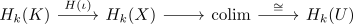
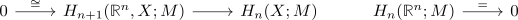

singular homology of an open subset of higher dimension
Proposition
Let $U \subseteq \mathbb{R}^n$ be open. Then for $k \geq n$
Proof
$n = k = 0$
$k > n$
Let $\alpha \in H_k(U;M)$ Then there exists a compact $K \subseteq U$ such that $\alpha \in \mathrm{im}(H_k(K) \rightarrow H_k(U))$
Since $K$ is compact it follows that $K$ is bounded (cf. Kompaktheit bzw. Vollständigkeit und Totalbeschränktheit), i.e. there exists an $\varepsilon > 0$ such that the diameter $\mathrm{diam}(K) < \varepsilon$
Let $K_{\varepsilon} \coloneqq \{y \in \mathbb{R}^n \vert d(y,K) < \varepsilon\} \subseteq U$ (cf.compact subset of an open space for a metric space)
Then choose an n-dimensional CW-structure on $\mathbb{R}^n$ such that each cell has diameter $\leq \frac{\varepsilon}{2}$ Then $K$ is contained in a finite subcomplex $X$ such that $K \subseteq X \subseteq U$. Since $k > n$ it follows that $a = 0$ b since $H_k(X) = 0$ as using homology as colimit of compact subsets there exists the factorization

where $\alpha \mapsto& 0$.
$k = n$
using the long exact sequence of a pair of spaces for $(\mathbb{R}^n, X)$ results in

reltaive homology for a euclidean space with higher dimension
using exactly sandwhiched by isomorphisms and zero object results in $H_n(X) = 0$